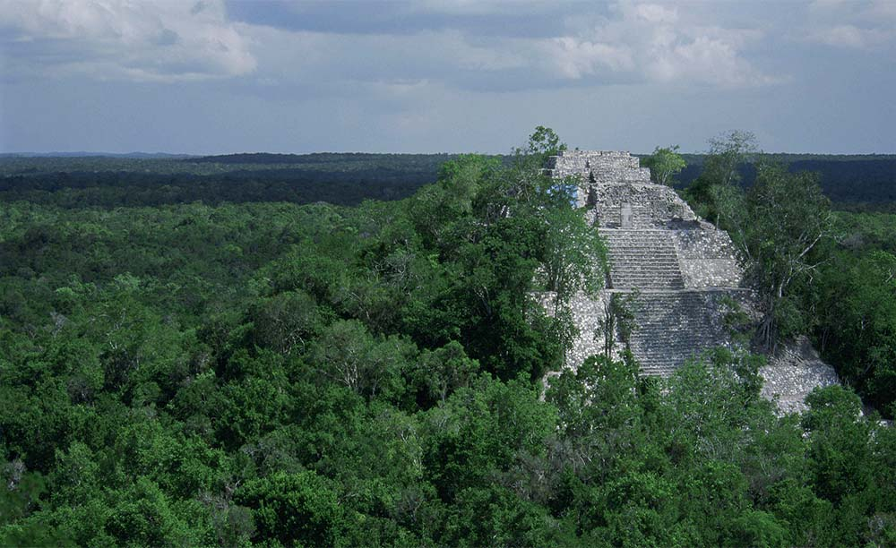

בני המאיה
תרבות עתיקה,
פנים חדשות
חקר המאיה חי ותוסס: אתרי מאיה לא מוכרים נחשפים ביערות מרכז אמריקה, חוקרים מנסים לפענח את כתב הסתרים של התרבות העתיקה, ארכיאולוגים חושפים פרטים חדשים על אורח חיי תושבי הערים. כל אלה מנסים לשפוך אור על השאלה הגדולה - מדוע נעלמה התרבות המפוארת?
״לפי תפישת המאיה,
בכל נשמה, לפני שהיא מגיעה לכדור הארץ,
מוטבעים קודים שונים. בחלקם של קודים אלה מצוי הידע
של התפתחות האנושות כולה ובחלקם מצוי הידע של הייעוד האישי,
שנקרא יום ההולדת הגלקטי. יום ההולדת הגלקטי הוא הרגע
שבו הנשמה שלנו מתחילה את תהליך הירידה אל תוך הגוף
ובה מוטבעים הסמלים שמלווים את ההתגלמויות
הפיזיות שלנו בכל הגלגולים.״

The Maya ruins of Palenque sit in the mist-shrouded jungles of eastern Mexico. The Temple of the Inscriptions, shown here, is the site's most impressive structure. Deep within the temple is an ornate, vaulted chamber containing the crypt of the ruler Pacal. PHOTOGRAPH BY KENNETH GARRETT
ב-1952 גילה כאן הארכיאולוג המקסיקני אלברטו רוס את אחת התגליות המרעישות של המאה ה-20: מתחת לאחד הלוחות, בו יש שורה כפולה של חורים, הסתתר גרם מדרגות. במדרגות אלו אני יורד אל לב הפירמידה. במשך ארבע עונות חפירה פינו את מה שהצטבר כאן במהלך השנים. באמצע הדרך משתנה כיוון המדרגות והן מגיעות אל חדר פנימי, הנמצא במפלס של בסיס הפירמידה. פה גילה רוס שרידי שלדים של חמישה או שישה אנשים צעירים, שהוקרבו לאלים. את סוף המעבר חסמה אבן משולשת גדולת מידות, שהיום מונחת בצד המעבר ומאפשרת מבט אל מה שהיה חבוי מאחוריה – קברו של המלך פאקאל "המגן". בפנים מונח לוח אבן גדול ומגולף, המכסה את הגומחה – הסרקופאג המונוליטי. כאשר הורם הלוח נמצא שלד גופתו של פאקאל. פני הגולגולת היו מכוסות במסיכת מוזאיקה מדהימה של אבן הירקן (JADE), הנמצאת כיום במוזיאון האנתרופולוגי של מקסיקו סיטי.

Maya Calendar On Ancient Parchment,
Religion Seasons World Culture Framed Art Print Wall Art by frenta.
״מי היו בני המאיה?״
אני עוצם את עיני ומדמיין את צ'אן באהלום – בנו של פאקאל, יוצא מלב הפירמידה, לאחר שהניח שם את גופת אביו, חלוש מכמה ימי צום, ממתין לפולחן. צ'אן באהלום לוקח להב חד של האבן השחורה והמסתורית (אובסידיום), ששבב שלה מונח כעת על שולחני ודוקר בחוזקה את איבר מינו. לאחר מכן הוא יורד, תשוש לגמרי ואפוף הזיות, במדרגות התלולות אל העם. הוא מציג לקהל את קליפות העצים המוכתמות בדמו ומשליך אותן אל לב המדורה הבוערת, הוא מבשר מהו המסר שקיבל מהאלים. אני עולה בחזרה למעלה.
התיאור לעיל קרוב כנראה למציאות והשאלות שהוא מעורר עומדות בלב המחקר הארכיאולוגי העכשווי של תרבות המאיה. מי היו בני המאיה? מי היו האנשים שבנו את מאות ואולי אלפי האתרים המופלאים הפזורים בשטח הרחב מיוקטאן שבמקסיקו ועד להונדוראס? מדוע זנחו אותם? מה היה אורח חייהם? כיצד רכשו את הידע הנרחב במתמטיקה ובאסטרונומיה עליו מעיד לוח השנה שלהם? הכתב הציורי המוזר שלהם, מבני הפירמידות המרשימים, התכנון האורבני של היישובים, הקדרות הפוליכרומית המפותחת, כל אלה מסקרנים את החוקרים המתמקדים בהבנת תרבות המאיה מזה כ-150 שנה.
רק מי שצעד או
שהה ביער העד הסבוך,
באקלים החם והמתיש, יכול
להבין את המאמץ הפיסי
של החוקרים הראשונים.

PARTIALLY RESTORED MAYA TEMPLE RUINS RISE ABOVE THE MAYA FOREST CANOPY Partially restored Maya temple ruins rise above the Maya forest canopy in Mexico's Calakmul Biosphere Reserve Mark Godfrey/The Nature Conservancy
Ring at Mayan ball court.
עם צמא דם
אחת ההשערות הראשונות והמקובלות מאוד היתה שבני המאיה היו איכרים שקטים ושוחרי שלום, שחיו סביב מרכזי פולחן גדולים. כיום ברור לרוב החוקרים שהם היו עם שואף מלחמה וצמא דם. מלחמות ופשיטות לשם תפיסת שבויים, היו חלק מהסדר החברתי המקובל שלהם. כמו שריצו את האלים בדם המלכים, כך הזינו אותם בדם של אצילים שבויים.
שליטי המאיה מצאו תמיד צידוקים תרבותיים להקרבת קורבנות אדם: מחגיגות דתיות וממסדיות ועד לאירועי ספורט כמו משחק הכדור יוצא הדופן, ה"פוק-פוק", שבסופו נערף ראשו של מנהיג הקבוצה המנוצחת. מגרש ה"פוק פוק" הגדול ביותר במרכז אמריקה נמצא בצ'יצ'ן איצה שבמקסיקו. חוקי המשחק אסרו על שבעת השחקנים לתפוש את הכדור בידיהם. רק ראש הקבוצה יכול היה להכות בו באגרוף. ההוראות מתבררות בפירוש המילולי של שמו של המשחק: "מרפק, מותן, ברך".
על הקירות במרכז המגרש יש כתובות המתארות את המשחק. אחת מהסצינות מתארת את כריתת ראשו של מנהיג הקבוצה המנוצחת. בצד ימין מתואר הגוף נטול הראש עם שישה נחשים, כשהדם פורץ לכל עבר. בצד שמאל מתוארת דמות של שחקן האוחז בימינו בסכין האבן ושמאלו מושיטה קדימה את הראש שנערף. תחתיו ניתן לראות את הכדור, שפניו כפני גולגולת, שכן לא אחת שימש הראש ככדור משחק לביזוי המנוצחים.
משחק הכדור,היה לא רק משחק ספורט, אלא גם ובעיקר פולחן בעל משמעות. לעיתים הכריחו שבויים לשחק במשחק, כשהמפסידים הוקרבו לאלים. לעיתים נקשרו הקורבנות ככדור ונזרקו במורד מדרגות המקדש. בצורתו הרוחנית ביותר היה המשחק מימוש מטפורי של סיפור מיתולוגי: מלחמתם של התאומים בעולם התחתון, שיבאלבה, ולעיתים קרובות היוו את הרקע המטפורי לאירועי הקרבת קורבן שבאמצעותם הכריזו מלך או יורשו על כוחם.
מגרש המשחקים נתפס גם כדרך המובילה אל העולם התחתון, משום שהעונש על ההפסד היה הקרבת המפסיד לאלים. לוחמים מחופשים לציפורים שלפו לנידונים את הלב כשנחש הנוצות, קוקולאקאן, מעופף מעליהם. במוזיאון האנתרופולוגי של מקסיקו סיטי ניצב פסל המראה את תנועת הקורבן מכופף את החזה קדימה, כך שבתנועת סכין אפשר היה לחדור לבית חזהו ולעקור את ליבו המפרפר. צריך לזכור שהמאיה לא נלחמו כדי להרוג, אלא כדי להקריב את אויביהם בטקסיות לאלים. אין ספק שהעובדה שבתרבותנו שולחים המנהיגים את מיטב הנוער אל שדה הקרב, היתה מזעזעת את בני המאיה. מנהיג המאיה היה יוצא בעצמו לקרב ונלחם פנים אל פנים נגד אויבו. לעיתים הכריע מאבק זה את גורלן של ערים יריבות.
In this work and in "Incidents of Travel in Yucatan" (1843) author John Lloyd Stephens brings to life his discoveries, during expeditions between 1839 and 1842, of the ruined remains of the Maya civilization of Central America. This images has been taken from from "Incidents of travel in Central America, Chiapas, and Yucatan”. Illustrated by numerous engravings ... Twelfth edition.]". The title and subject terms of this image have been generated from tags, created by users of the British Library's flickr photostream.
Act I, Scene I of Atalanta — representing
Agamemnon’s palace at Argos.
Act I. Scene II — Inside
Agamemnon’s Palace at Argos.
Act II, Scene I — A
Beach near the capitol
Act II, Scene II — Inside Poseidon’s Temple
Atlantis. You can se a statue of him in
his chariot in the center at the back.
Act II Scene IV — The Banquet Hall at the Royal
Palace of Atlantis
Act III Scene I (and only) — The Public Square
at Athens.
העיר והעולם
אין כמעט ספק בלב החוקרים שערי המאיה הן מודלים סימבוליים של העולם. למרות הריחוק הגיאוגרפי איני יכול שלא לחשוב על מאנדלות בודהיסטיות. לא הופתעתי כשגיליתי שחוקר מאיה בעל שיעור קומה כמיכאל ד. קו כתב (בספרו ה"מאיה") על האפשרות שתרבויות מרכז אמריקה הושפעו מתרבויות אסיאתיות, דרום-מזרח אסיאתיות וסיניות. הוא מציין במיוחד את הדמיון בתפיסה הקוסמולוגית, החל מהדמיון במבנה לוח השנה עד לתפיסה הדומה של ארבעת כיווני הרוחות, שסומנו בדמות של חיה, צבע, צמח ודמות אל דומה.
היקום של המאיה היה מורכב משלושה אזורים: קשת השמיים זרועת הכוכבים, העולם האמצעי והסלעי של האדמה, הניזון מדם המלכים ונותן פירות ופרחים; והעולם התחתון, העולם של המים הכהים. הציר המרכזי של היקום היה ציר השמש בתנועתה היומית ממזרח למערב. לכן המזרח, בו נולדת השמש, היה הכיוון החשוב ביותר. בתרשימי העולם של המאיה המזרח מופיע תמיד למעלה. מערב, שם השמש מתה, הוא תמיד שחור ולמטה. הציר מרכזי שחיבר את כל העולמות היה עץ העולם, ששורשיו בעולם התחתון, גזעו בעולם האמצעי – העולם של בני האדם, וענפיו נוסקים אל השמיים.
עבור המאיה היה העולם האמצעי חי וטעון באווירת קדושה, במיוחד במקומות כמערות והרים. נקודות כוח אלה העתיקו המאיה לאחר מכן למבנה הערים. הפירמידות, למשל, היו מעוטרות בדמות מפלצת הוויץ (WITZ), מלה המציינת הר או גבעה. הפירמידות נבנו על גבי פירמידות קודמות, הכילו אותן בקרבן, וכך הוסיפו וצברו עוצמה. המקדש שבראש הפירמידה מוביל אל המערה שבלב ההר, שהיא הדרך המובילה אל עולם הרוחות והאלים. בתוך המערה גדל עץ העולם, המסמן את מרכז היקום. קבוצת פירמידות נתפסה לכן כרכס הרים המתרומם מעל ליער העד. הכיכרות שבין הפירמידות היו מלאות בלוחות אבן שנקראו "עצי אבן", ועליהן דמויות המלכים.
The ancient Mayans represented the Universe by means of a huge ceiba tree or YAAX-CHÉ. The branches supported the sky (CAAN), in the trunk the life of man on earth passed (CAB) and the roots sank into the underworld (XIBALBA). They conceived of the earth in a square shape and believed that it rested on a huge alligator or turtle. The sky was divided into thirteen layers ruled by the gods OXLAHUNTIKÚ and nine were those of the underworld in the power of the gods BOLONTIKÚ.
כוכבי המאיה
אני עולה על הפירמידה, הידועה כמקדש ארבע. כאן, ניהלו המאיה מלחמה מסוג חדש, שנקראה "מלחמת הכוכבים". ב-16 בינואר 378 לספירה כבשה טיקאל עיר מתחרה שכנה בשם אושאקטון (UAXACTUN). זאת לא היתה מלחמה מסורתית כפי שהיתה נהוגה עד אז, מלחמה לשם תפיסת שבויים, המתנהלת בין אצילים בודדים הנלחמים על כבודם וחייהם, אלא מלחמה של כיבוש ומוות, בה זוכה המנצח בממלכה של המפסיד. מלחמה כפי שהיא מוכרת לנו.
המאיה אימצו סוג זה של מלחמה בהשפעת אחד הכוחות התרבותיים המרכזיים במרכז אמריקה – טאוטיהואקאן (TEOTIHUACAN) – עיר ששכנה בעמק של מקסיקו. לא רק את האופן החדש של הלחימה שאלו בני המאיה מטיקאל ואושאקטון מתרבות זו, אלא גם פולחן ולבוש הקשורים למחזור כוכב נוגה. הם קשרו את נוגה למלחמה ותיאמו את הקרבות למחזור הופעתו בן 78 הימים. גרמי השמיים קשורים גם לאחד הסיפורים המיתיים הידועים ביותר: מלחמתם של התאומים בעולם התחתון. המלחמה מתחילה במגרש משחק הכדור. התאומים משחקים ועושים רעש מעל לראשם של שליטי העולם התחתון. מוות אחד ומוות שבע (או אולי המוות הראשון והמוות השביעי) קוראים לאלי המוות ולכל המחלות לבוא ולהרוג את האחים. בערמומיותם מצליחים השניים לנצח את אלי המוות ולהשמיד את הממלכה הרעה של שיבאלבה. בעקבות ניצחון זה הם עולים לשמיים והופכים להיות השמש והירח.
A depiction of a Mayan warrior. Mayan kings often went to war. Behind the warrior is a Mayan blue background.
חיי כפר
לאחר כמעט מאתיים שנה של מחקר הידע שלנו על המאיה רחב יותר. לא מעט ידוע על חיי היומיום שלהם, זאת תודות לתאווה של המיסיונרים הספרדים הראשונים, שתיעדו את תרבות בני המקום, לפני שהכריחו את התושבים להמיר את דתם לנצרות.
אנשי המאיה התקיימו מחקלאות וציד, גידלו כותנה ויצרו אריגים. אחד ממרכיבי המסחר החשובים ביותר שלהם היה המלח. זרעי הקקאו (דומה מעט לזרע הקיקיון) שימשו אותם ככסף. מרבית המסחר היה דווקא דרך הים, שכן מצבן של הדרכים היבשתיות היה ירוד. תומפסון כינה את המאיה: "הפניקים של מרכז אמריקה".
מייד לאחר הלידה היו האימהות מצמידות לראשם של ילדיהן הרכים שני לוחות עץ מהודקים, כדי להפוך את הגולגולת לשטוחה ובולטת קדימה. מראה זה היה סימן של יופי. בין גיל ארבע ל-12 עברו הילדים טקס טבילה שלאחריו היו הבנות בשלות להקים משפחה. בנים גדלו בנפרד ממשפחותיהם בבתים מיוחדים, בהם ביקרו זונות דרך קבע. הבנות שגודלו על ידי אימהותיהן נענשו קשות כאשר התנהגו באופן שנחשב כלא מוסרי. החברה היתה לרוב מונוגמית ועל גילוי עריות הוטל עונש מוות.
מספרים בכתב המאיה. הכתב פוענח בתחילת המאה ה-19
האסתטיקה של המאיה היתה שונה משלנו. הם נהגו לצייר ציורים על השיניים הקדמיות, או לצפותן באבן הירקן. גברים צעירים צבעו עצמם בדרך כלל בשחור וכתובות קעקע עיטרו את גופם של גברים ונשים. פזילת עיניים נחשבה כדבר אסתטי ונהגו ליצור אותה או להגבירה על ידי תליית חרוזים קטנים מעל לאף.
השאלה הגדולה היא מדוע "נעלמה" תרבות זאת כמעט במפתיע בסביבות 900 לספירה. למעשה צריך לנסח את השאלה אחרת: מדוע דעכה תרבות המאיה לכדי תרבות איכרית מינימלית בעובי יער העד? המלחמות הרבות הפכו בהדרגה את הערים לעיי חורבות. ייתכן גם שהניצול האינטנסיבי של הסביבה גרם להפרת האיזון האקולוגי ביער הגשם, פגע במקורות המזון והביא לתקופות של רעב (שלדים מהתקופה הקלאסית המאוחרת הראו סימנים של תת-תזונה). סיבה משוערת נוספת היא מחסור במים בעקבות התפוצצות אוכלוסין, שכן בשלבים המאוחרים של תרבות זו חיו על קילומטר רבוע 200 בני אדם.
כך או כך ב-900 לספירה דעכה תרבות המאיה המפוארת ומה שנותר מעברה העשיר הן ערים חרבות אי שם בלב הג'ונגל. אלא שבני המאיה חיים. למעשה מעולם לא חדלו לחיות בשטחים בהם התגוררו אבות אבותיהם. על פי ההערכה המקובלת חיים 1.2 מיליון בני מאיה בחבל צ'יאפס, בדרומה של מקסיקו. חמישה מיליון נוספים פזורים בחבל יוקטאן במקסיקו ובאזורי המאיה בבליז, בגואטמלה, בהונדוראס ובאל-סלבדור. מבחינה אתנית אין ספק בכך שתושבי מרכז אמריקה המכונים צאצאי המאיה הם אכן יורשיהם הישירים של בני המאיה שבנו את ערי הפאר בקופאן, בפאלנקה, בטולום ובמקומות אחרים. הבעיה היא שהמבקרים, המגיעים כיום למרכז אמריקה, מתקשים להאמין שהתושבים המקומיים, החיים בתנאים לא קלים ובתרבות לא מפותחת בכל מידה עכשווי, הם יורשי בני המאיה שיסדו את תרבות הפאר המפותחת המשתקפת משרידי הערים.
דיכוים של בני המאיה החל מיד לאחר הכיבוש הספרדי. כבר במאה ה-16 הוציאו מסיונרים ספרדים את דת המאיה אל מחוץ לחוק ושרפו את כל ספרי התיעוד של תרבות המאיה. למרבית צערם של החוקרים נותרו מספרי נייר אלה רק ארבעה ספרים, המשמשים עדות לא מספקת לצורכי מחקר של הכתב המפותח, הידע הרב במתמטיקה, התיעוד והתיארוך המדויקים של בני המאיה. תושבי אזורים אלה שלא נהרגו במלחמות, או מתו במחלות הועסקו בעבודות כפייה ולעיתים אפילו כעבדים. במשך 400 שנים תמימות פעלה מחתרת של המאיה, תחילה כנגד השלטון הספרדי ולאחר מכן כנגד השלטון המרכזי של מקסיקו.
Canoeist, Courtesy of Xcaret.
כיום גאים שלטונות מקסיקו בהקפדה יתרה על זכויותיהם של המאיה, אם כי נתונים עדיין מצביעים על כך שכ-50 אחוזים מבני המאיה אינם יודעים קרוא וכתוב, בעוד שבקרב האוכלוסייה בכל מקסיקו הנתון הוא 12% בלבד.
בכל אזורי המאיה ממשיכים עדיין התושבים לטפח את התרבות המסורתית, את המנהגים, את המסורת, ואת הפולקלור והאומנות העממית. התחום שבו בולטים טיפוח ושימור אלה במיוחד הוא אריגת הבדים. השוואה מרתקת שערכו אנתרופולוגים מצביעה על דימיון ואפילו זהות מושלמת בין דוגמאות האריגים שבהם עוטפות עצמן בנות המאיה במקסיקו ובגואטמלה לאלה המופיעים בתבליטי האבן שבערי המאיה העתיקות.
Hand-woven Mayan textiles from Guatemala
הקישור הישיר והברור הזה בין אומנות עכשווית ושימושית כאריגת הבדים לבין המסורת העתיקה מהווה עבור בני המאיה את ההוכחה הטובה ביותר להמשכיות. הם עדיין לובשים את הבדים שנושאים את הסמלים האוניברסליים והמאגיים שאותם לבשו אבות אבותיהם, בוני הערים המדהימות. בשום מקום אי אפשר לראות בד צבעוני ובו ארוגים מוטיבים עכשוויים או מודרניים. בכל האריגים מופיעים מוטיבים על טבעיים, חלומות הקשורים לאלים ולפולחן העתיק. שרידים של התרבות שהותירה כביכול רק ערים מפוארות עשויות אבן.